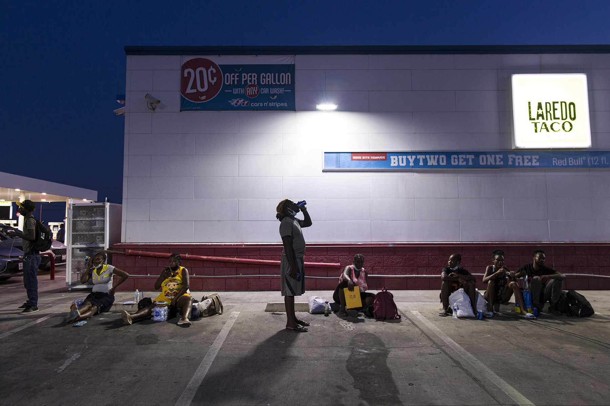

Several Haitian migrants allowed to stay in the U.S. wait at a gas station in Del Rio, Texas for a volunteer to help them find transportation on Sep. 20, 2021. .
A gas station along Veterans Boulevard, Del Rio, Texas, serves several functions.
While patrons buy gas, lottery tickets or have their cars serviced, hundreds of Haitians recently released
from immigration authorities gather there trying to decipher the next step.
The migrants arrive after completing asylum paperwork with the U.S. Customs and Border Protection or from the Val Verde Border
Humanitarian Coalition. The latter connects migrants with relatives who will send funds for airfare or bus fare to new locations.
For many migrants, it’s a long day of trying to get answers, charging their smartphones or exchanging money or information.
Eventually, many find their way to a Greyhound bus, which arrives twice daily to pick up whoever has a ticket.